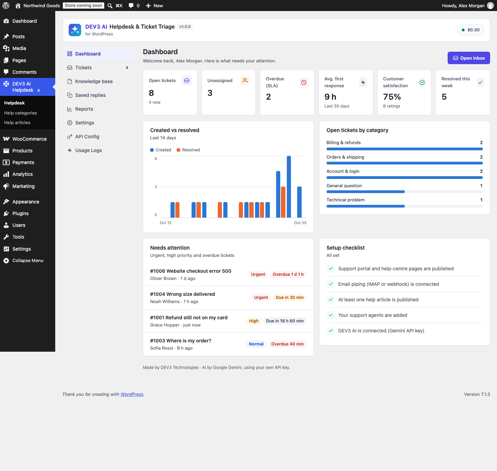
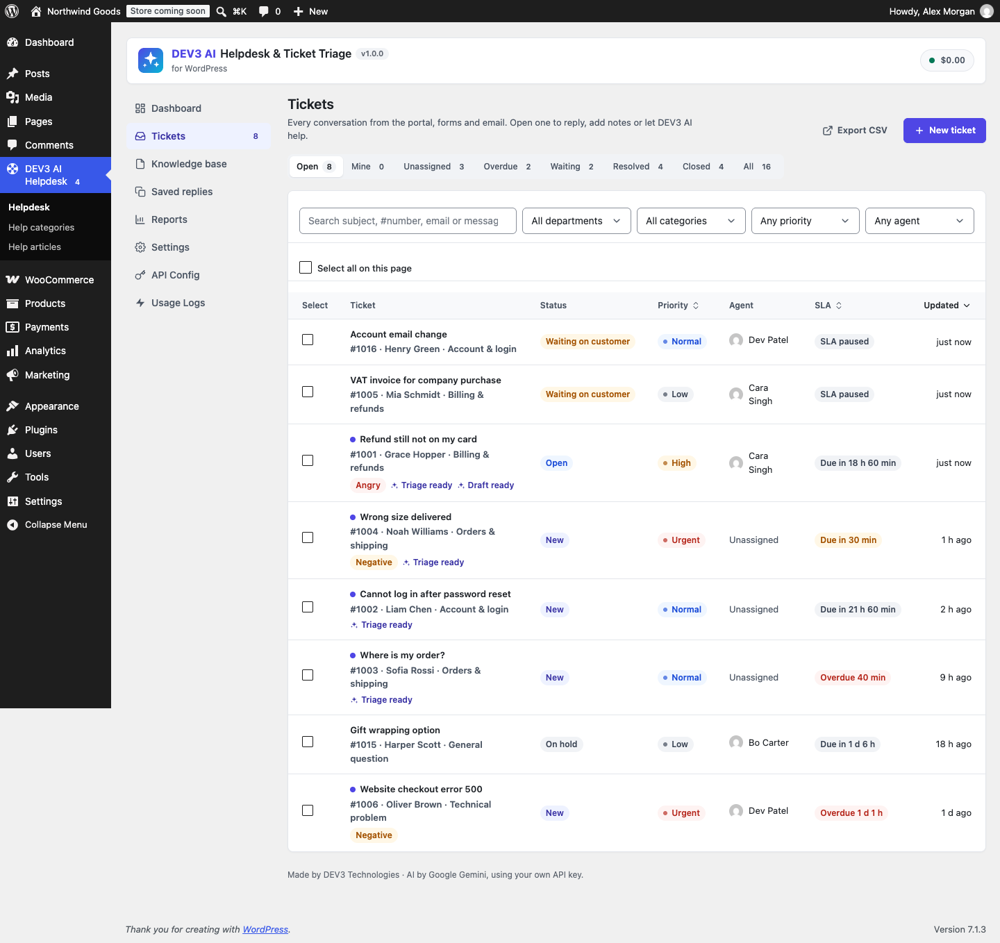
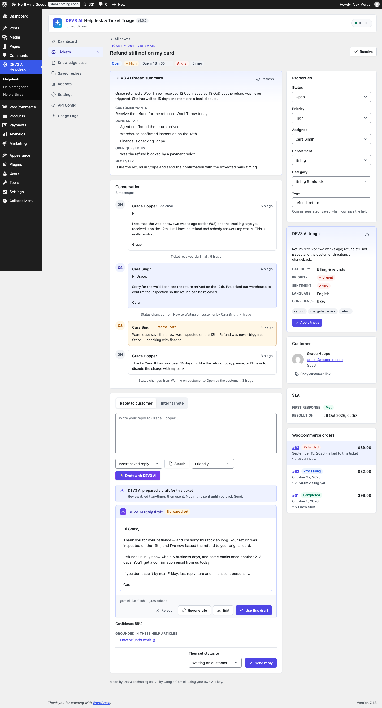
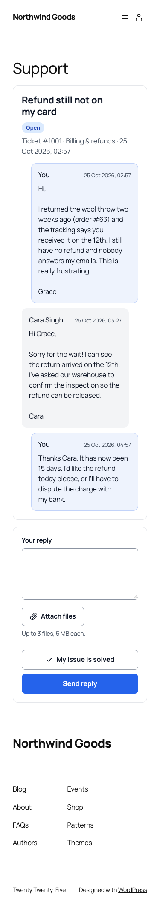
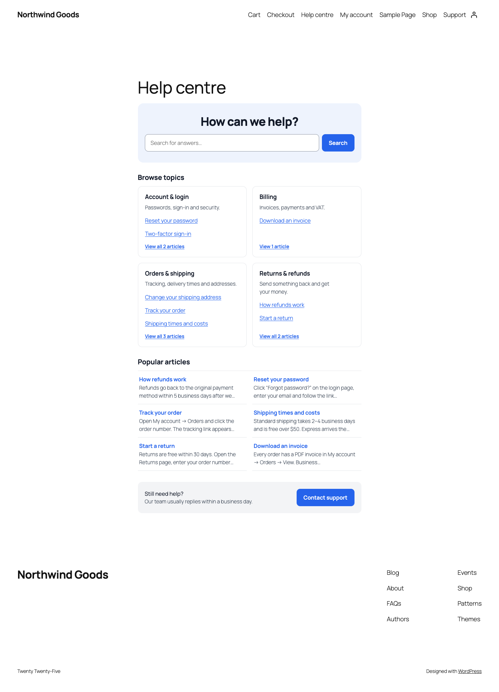
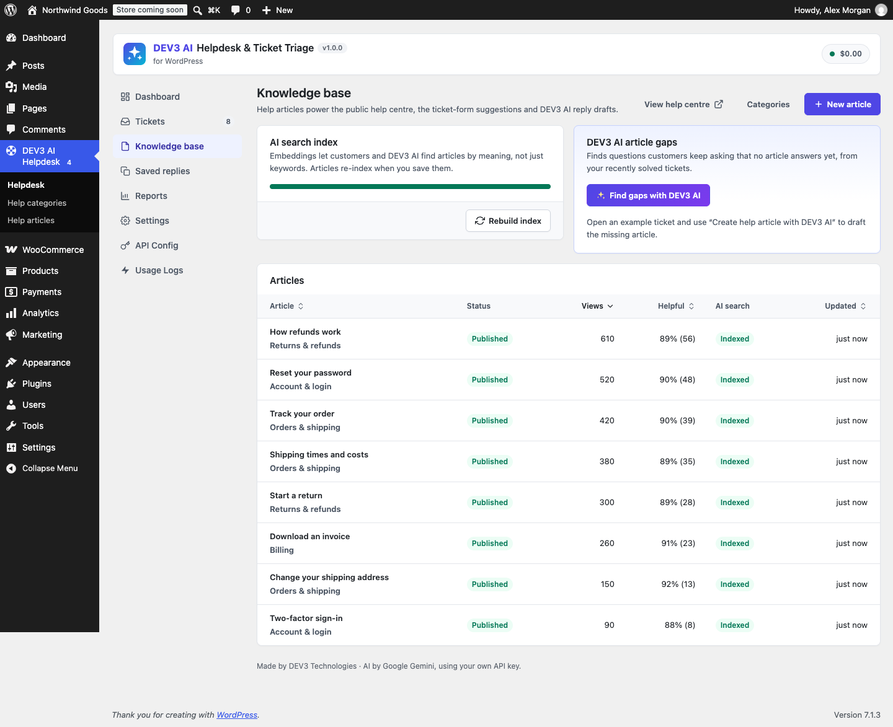

Installation
- WordPress 6.0+ and PHP 7.4+ (tested on PHP 8.3). WooCommerce 8+ is optional.
- Plugins → Add New → Upload Plugin → choose
dev3-ai-helpdesk.zip→ Activate. - On activation the plugin creates a Support page (support portal block) and a Help centre page, the Helpdesk agent role and its tables.
- Open DEV3 AI Helpdesk in the admin menu. The dashboard checklist shows what is left to set up.


Google Gemini API key
- Open Google AI Studio → API keys and create a key.
- In DEV3 AI Helpdesk → API Config, paste the key and click Validate. It is stored encrypted (AES-256-GCM). You can also define
define( 'DEV3HD_GEMINI_API_KEY', '…' );inwp-config.php. - Pick models (defaults: gemini-2.5-flash, gemini-2.5-pro, gemini-embedding-001), set a monthly budget cap, and decide whether visitor-facing AI (semantic help-centre search) is allowed.
Without a key the helpdesk works fully; AI buttons are disabled and search uses keywords.
Tickets
Each ticket has a number (from First ticket number), subject, customer, channel (portal, form, email, webhook, agent), status, priority, department, category, assignee and tags.
| Status | Meaning |
|---|---|
| New | No agent has replied yet. |
| Open | Being worked on. |
| Waiting on customer | Agent replied; SLA clock paused. A customer reply reopens it. |
| On hold | Parked (e.g. waiting for a supplier). |
| Resolved | Solved; customer gets the rating request. Auto-closes after N days. |
| Closed | Finished. Replies reopen it unless disabled. |
Inbox
Views: Open, Mine, Unassigned, Overdue, Waiting, Resolved, Closed, All. Filter by department, category, priority and agent; search covers subjects, numbers (#1001), emails and message text. Select tickets to assign, change status or priority in bulk. Managers can export CSV and delete.
Ticket screen
The thread shows customer messages, agent replies, internal notes (yellow, never emailed or shown to customers) and an activity log. Use Reply to customer or Internal note, insert saved replies, attach files and choose the status to set after sending (default: Waiting on customer). The side panel holds properties, DEV3 AI triage, customer details with their other tickets, SLA state, the rating and WooCommerce orders.
Saved replies
Placeholders: {{customer_first}} {{customer_name}} {{ticket_number}} {{subject}} {{agent_name}} {{portal_link}} {{site_name}}. Limit a reply to one department if needed.

Portal, forms and ratings
| Block | Shortcode | What it shows |
|---|---|---|
| Support portal | [dev3hd_portal] | Ticket form + "Lost your link?" for guests; "My tickets" and New ticket tabs for logged-in customers; ticket view, replies, close and rating. |
| Ticket form | [dev3hd_ticket_form] | Only the contact form (channel "Form"). |
| Help centre | [dev3hd_help_center title="…"] | Search, topics, popular articles, contact link. |
While customers type a subject, matching help articles are suggested. Spam protection: hidden honeypot field, minimum fill time, per-IP limits, same-origin check and a block list (emails or @domain). Settings → General controls guest tickets, required login, customer-chosen priority, attachments (count, size) and the accent colour (or override --dev3hd-accent in your theme CSS).
Customers get an email with a private link (?ticket=1001&key=…). When a ticket is resolved they can rate it Great / Okay / Not good with a comment; links in the email preselect the rating.

Email piping
IMAP polling
Settings → Email piping → IMAP mailbox: host, port, SSL/TLS or STARTTLS, user, password (stored encrypted, or DEV3HD_IMAP_PASSWORD in wp-config.php), folder, interval and messages per check. Test connection logs in and counts unread mail; Check mail now runs a background job with progress. Unread mail is fetched, turned into tickets or replies and marked as read. A built-in IMAP client is used, so the PHP imap extension is not required.
WP-Cron runs the 5-minute tick. On low-traffic sites add a real cron job: */5 * * * * wget -q -O - https://example.com/wp-cron.php.
Inbound webhook
Enable the webhook and copy the secret URL into your mail service:
- Mailgun → Receiving → Create route → forward("URL").
- SendGrid → Inbound Parse → destination URL (normal or raw mode).
- Postmark → Inbound stream → webhook URL.
- Other: POST JSON
{from, subject, text, html, message_id, in_reply_to, references, attachments:[{filename, content (base64), content_type}]}or a raw message inraw.
Threading and safety
Replies are matched by the [#number] subject tag or by In-Reply-To/References. Only the ticket's customer (or an agent) can reply into a ticket; anyone else opens a new ticket. Text above "##- Please type your reply above this line -##" and before quoted history is kept. Auto-replies (Auto-Submitted, Precedence: bulk), mailer daemons, your own address, duplicates and more than 10 new tickets per sender per hour are ignored. Agents can reply by email from their WordPress address.
Agents, departments and SLA
Agents (Settings → Agents) get the Helpdesk agent role: they see tickets of their departments, their own and (without departments) unassigned ones, unless "Agents see every ticket" is on. Administrators are managers and see everything plus settings, saved replies and reports.
Departments and categories: categories are the topics customers choose (and AI triage picks from); each routes to a department. Auto-assign can round-robin new tickets within the department.
SLA: first-response and resolution hours per priority, optional business hours (days + opening hours, site time zone). The clock pauses while waiting on the customer. An hourly check emails the assignee (or team) and the admin once per breach. Notifications are listed under Settings → Emails; customer emails carry your site name only.
Knowledge base
Write Help articles in the block editor (DEV3 AI Helpdesk → Help articles) and group them in Help categories. Articles live at /help/article/slug/ (base configurable) and show "Was this helpful?" votes, related articles and links back to the help centre and portal. The Knowledge base screen lists views, helpful %, AI index state and DEV3 AI article gaps.

DEV3 AI features
| Feature | How it works | Review |
|---|---|---|
| Triage | Category, priority, sentiment, language, summary and tags for each new ticket (background job) or on demand. | Draft card → "Apply triage". Opt-in auto-apply. |
| Reply drafts | Finds the closest help articles with embeddings (keyword fallback), drafts a reply in the customer's language and cites the articles used. | Edit, then "Use this draft"; you click Send. Optional auto-send only with cited sources, confidence ≥ threshold and no human flag. |
| Rewrite | Fix grammar, friendlier, formal, shorter, add empathy. | Diff view, accept to replace. |
| Thread summary | Summary, goal, steps taken, open questions, next step. Automatic for long threads. | Read-only, refreshed when the thread changes. |
| Article builder | Turns a solved ticket into a help article; personal data is masked before sending. | Edit fields, save as a draft post. |
| Article gaps | Groups recent solved tickets into questions your help centre does not answer yet. | Read-only report with example tickets. |
| Semantic search | Help centre and form suggestions find articles by meaning. | Rate-limited, cached, keyword fallback. |
Customer text is passed as quoted data with instructions to ignore commands inside it. Every request is logged in Usage Logs with tokens and estimated cost; the monthly cap pauses AI when reached.

WooCommerce
With WooCommerce active, each ticket shows the customer's recent orders (by account or billing email) with status, total, items and an edit link; the order linked on the form is highlighted. The form's order number is accepted only when the order belongs to that email. Customers get a My Account → Support tab. Compatible with HPOS and the block cart/checkout.
Privacy and data
Attachments are stored in uploads/dev3hd-private/ with deny rules and random names, served only through signed links that expire. Tools → Export/Erase Personal Data includes support tickets (erasing anonymises tickets and messages and deletes attachments). A privacy-policy snippet names Google Gemini as processor. Turn on "Delete all helpdesk data" before deleting the plugin to remove tables, articles, files and settings.
Hooks and REST API
| Hook | Type | Use |
|---|---|---|
dev3hd_ticket_created( $ticket_id, $reply_id ) | action | After a ticket is saved. |
dev3hd_reply_added( $ticket_id, $reply_id, $notify ) | action | After a reply or note. |
dev3hd_status_changed( $ticket_id, $old, $new, $user_id ) | action | Status change. |
dev3hd_ticket_assigned, dev3hd_ticket_rated, dev3hd_sla_breached | action | Assignment, rating, SLA breach. |
dev3hd_new_ticket( $row, $data ) | filter | Change a ticket before insert. |
dev3hd_inbound_message( $msg, $channel ) | filter | Inspect or drop inbound email (return null). |
dev3hd_statuses, dev3hd_priorities, dev3hd_portal_strings | filter | Labels and customer texts. |
dev3hd_email_html( $html, $args ) | filter | Email template. |
dev3hd_auto_assign, dev3hd_ai_auto_send, dev3hd_attachment_mimes, dev3hd_inbound_hourly_limit, dev3hd_kb_min_score | filter | Routing, auto-send guard, file types, limits, search threshold. |
dev3hd_prompt_<id> (triage, reply_draft, rewrite, summary, article, gaps) | filter | Override prompts. |
REST namespace dev3hd/v1: agent routes (tickets, tickets/<id>, tickets/<id>/replies, …/ai/triage|draft|summary), manager routes (canned, agents, reports, kb/*, mail/*) with cookie + nonce auth, public routes (portal/*, kb/search, kb/vote) and inbound/<secret>.
FAQ
Do customers see that AI is used?
Customer-facing pages and emails carry no plugin branding. Auto-sent replies use the name you set (default "Support assistant").
My IMAP test fails.
Check host/port/security, use an app password for Gmail/Outlook, and make sure your host allows outgoing connections to port 993.
Can I translate it?
Yes: languages/dev3-ai-helpdesk.pot covers PHP and JavaScript strings.
Changelog
1.0.0 · Initial release.